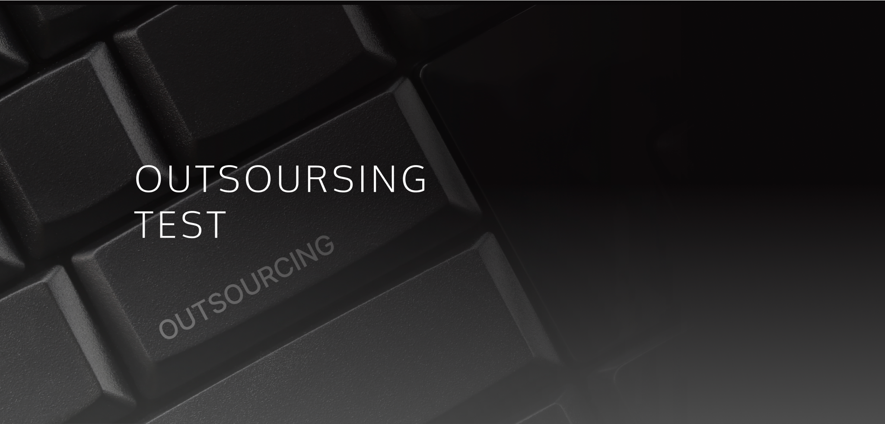

Outsourcing Test
QA 아웃소싱 · 테스트 외주
소프트웨어 품질 검증을 전문 테스트 기업에 맡기는 서비스입니다. 티벨의 분야별 테스트 전문가가 프로젝트에 합류해 개발자와 직접 소통하며 테스트합니다.

DEFINITION
QA 아웃소싱이란?
QA 아웃소싱(테스트 아웃소싱, 테스트 외주)은 웹·모바일 앱·임베디드 등 소프트웨어의 품질 검증 업무를 외부 전문 테스트 기업에 맡기는 방식입니다.
내부에 QA 인력이 없거나 부족할 때, 특정 분야의 테스트 전문성이 필요할 때, 출시 일정에 맞춰 테스트 인력을 빠르게 늘려야 할 때 활용합니다. 채용과 교육 부담 없이 필요한 기간에 필요한 만큼 전문 인력을 투입할 수 있고, 만든 사람이 아닌 제3자의 눈으로 품질을 검증할 수 있습니다.
- 한 줄 정의
- 소프트웨어 테스트를 외부 전문 기업에 맡기는 서비스
- 이런 팀에
- QA 전담 인력이 없거나, 출시 전 테스트 인력이 일시적으로 더 필요한 팀
- 같은 말
- 테스트 외주, QA 외주, 소프트웨어 테스트 아웃소싱
WHEN YOU NEED IT
이럴 때 QA 아웃소싱이 필요합니다
- 개발자가 테스트까지 맡느라 출시가 자꾸 늦어진다
- QA 전담 인력을 채용하고 교육할 여유가 없다
- 출시 직전처럼 특정 기간에만 테스트 인력이 더 필요하다
- 금융·자동차처럼 업무 도메인 지식이 필요한 테스트다
TYPES
QA 아웃소싱은 어떤 방식이 있나요?
업계에서 쓰는 대표적인 세 가지 방식입니다. 티벨은 프로젝트의 규모와 일정, 품질 목표를 보고 맞는 방식을 제안합니다.
| 인력 파견형 | 프로젝트 전담형 | 크라우드 테스팅 | |
|---|---|---|---|
| 진행 방식 | 테스트 전문가가 고객사 프로젝트에 합류해 지정된 테스트를 수행 | 전략 수립부터 설계·수행·결함 관리·결과 보고까지 전담 팀이 책임 | 다수의 테스터가 각자의 기기와 환경에서 버그와 사용성을 검증 |
| 책임 범위 | 테스트 수행 | 테스트 전 과정과 출시 판단 지원 | 탐색·호환성 검증 |
| 잘 맞는 경우 | 내부에 QA 리드가 있고 실행 인력이 필요할 때 | QA 조직이 없거나 출시 품질을 통째로 맡기고 싶을 때 | 기기·환경 다양성을 넓게 확인해야 할 때 |
TEST FIELDS
어떤 분야를 테스트하나요?
Web / AppWEB · APP
업그레이드 주기가 빠른 분야입니다. 릴리즈 계획에 맞춰 신속하면서도 신뢰도 높은 테스트를 실행합니다.
IoT / AIIOT · AI
전문 지식을 바탕으로 IoT·AI 관련 제품과 시스템을 테스트합니다.
임베디드EMBEDDED
기계·전자 장치를 제어하는 임베디드 적용 제품에 다각도의 테스트 기법을 적용합니다.
금융FINANCE
고도의 신뢰성이 필요한 분야로, 금융 산업에 대한 이해와 전문 테스트 기술을 함께 투입합니다.
자동차AUTOMOTIVE
복잡한 기술이 탑재되어 정밀성이 필요한 분야입니다. 정밀도 높은 테스트 기법으로 수행합니다.
WHY TBELL
티벨 아웃소싱 테스트가 다른 점
- 01
경영 환경 분석으로 명확한 방향 제시
고객의 사업과 프로젝트 환경을 먼저 분석해, 무엇을 얼마나 테스트할지 방향을 분명히 합니다.
- 02
분야별 전문가 파견, 개발자와 자유로운 소통
외주 테스트의 가장 큰 비용인 커뮤니케이션을 줄입니다. 전문가가 개발자와 바로 이야기합니다.
- 03
요구사항을 반영한 최적의 솔루션
정해진 패키지가 아니라 고객의 요구사항에 맞춘 테스트 범위와 방법을 제안합니다.
- 04
고객 환경에 맞춘 실무자 교육
프로젝트가 끝난 뒤에도 품질이 유지되도록 실무자 교육을 함께 진행합니다.
- 05
정확성과 신뢰성으로 제품 경쟁력 확보
결함을 정확히 찾고 재현 가능하게 보고해, 출시 판단을 믿을 수 있게 만듭니다.
- 06
10개 산업 도메인 경험
금융, 영상, 보안, 자동차, 전자, 임베디드, 전자상거래, 통신, 플랫폼, 공공 분야를 테스트해 왔습니다.
PROCESS
QA 아웃소싱은 이렇게 진행됩니다
요구 분석 · 범위 정의
테스트 대상(웹, 앱, API, 임베디드)과 유형(기능, 회귀, 성능 등)을 정하고 공수를 산정합니다.
전략 · 설계
품질 목표에 맞춰 우선순위를 정하고 테스트 시나리오를 설계합니다.
수행 · 결함 관리
테스트를 수행하고, 발견한 결함을 개발팀과 함께 추적해 해결합니다.
결과 보고
결과와 개선 사항을 정리해 보고하고 출시 판단을 돕습니다.
FAQ
자주 묻는 질문
QA 아웃소싱 비용은 어떻게 정해지나요?
테스트 대상(웹, 모바일 앱, API, 임베디드 등)과 테스트 유형(기능, 회귀, 성능, 보안, 자동화)을 먼저 정의한 뒤, 필요한 인력 규모와 기간으로 공수를 산정합니다. 범위가 명확할수록 견적도 정확해집니다.
QA 아웃소싱의 단점은 없나요?
외부 인력과의 커뮤니케이션 비용, 담당자 역량에 따른 품질 편차가 대표적인 우려입니다. 티벨은 분야별 테스트 전문가가 개발자와 직접 소통하고, 업무 도메인 경험을 갖춘 인력을 투입해 이 부분을 줄입니다.
테스트 외주 업체는 무엇을 보고 골라야 하나요?
투입 인력과 단가만이 아니라 해당 업무 도메인 경험, 품질 목표에 맞춰 테스트 전략과 우선순위를 조정할 수 있는 역량, 개발팀과의 소통 방식, 결과 보고 체계를 함께 확인하는 것이 좋습니다.
테스트 인력이 필요하신가요?
프로젝트 일정과 범위를 알려 주시면 맞는 아웃소싱 방식과 투입 계획을 제안해 드립니다.
070-7777-9113 · 월–금 09:30–18:00 (점심 12:00–13:00)